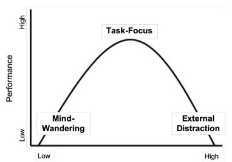

Beyond Background Noise: How to Use Music as a Task Catalyst and Attention Anchor
It’s a common feeling to avoid tasks when they are stressful and motivation is low. Sometimes starting may even feel harder than the task itself. In these moments, you may have intuitively put on some music in order to make it tolerable and muster enough motivation or energy to start, and this intuition isn’t random.
Music doesn’t just fill silence — it can actively shape how we engage with tasks. However, as personal experience might have shown, the relationship is nuanced. Sometimes music can “help you focus” - making study or work less daunting, and repetitive chores easier to get through. However, sometimes it can also distract you or do nothing at all.
Understanding why this happens requires looking at music not as background noise, but as a tool that interacts with our internal state. There are numerous studies exploring this relationship with music, and how it can relate back to productivity. However, we will limit the scope and suggest that music can serve two distinct roles: helping us start tasks and helping us stay with them. As a result, when used correctly, it can act as both a catalyst and an attentional anchor.
Why starting is often harder than doing
Music as a catalyst
Task initiation can be one of the most underestimated challenges in everyday life. Whether it’s beginning a complex report, sitting down to study, or even starting household chores, the first step requires a mental shift. We have to move from rest, avoidance, or emotional resistance into focus and engagement. This requires an intentional shift from what was being done before to the new task. This is associated with a context switch, energy costs, and overall discipline which may or may not be readily available.
This difficulty isn’t just laziness. It’s often tied to what researchers describe as our internal climate — the combination of mood, energy, and alertness we bring into a task. When this internal climate is low, tasks feel heavier and the friction to start noticeably increases. Furthermore, if there are any negative associations, such as boredom, stress, or even fear linked to the task, this resistance is further amplified.
However, music can help here by changing that internal climate. Listening to music before or at the start of a task can increase engagement and emotional readiness, making the transition into work feel smoother. This is music functioning as a task catalyst. While it doesn’t do the work for us, it can lower the barrier to getting started.
Staying focused in a sea of distractions
Music as an attentional anchor
Starting a task is only half the battle. Sustaining attention — especially during long, repetitive, or mentally under-stimulating tasks — presents a different challenge altogether. Our minds naturally wander when a task doesn’t fully occupy our attention. Emails, long readings, and repetitive workflows often leave “extra” mental capacity unused. Without something to anchor our attention, our brains often uses that capacity to drift towards unrelated, but more interesting, thoughts or distractions.
Music can help by providing a consistent external structure for attention. A melody, rhythm, or familiar track gives the mind something predictable to engage with, reducing the likelihood of drifting into mind-wandering. This is music functioning as an attentional anchor.
Research on sustained attention supports this idea. In one controlled study, participants completed a long, monotonous attention task both in silence and while listening to their preferred music. Researchers collected participants’ performance and speed on tasks, as well as self-reports about participants’ moment-to-moment attentional states — whether they felt focused, distracted, or mentally absent.
After collecting the data and conducting a statistical analysis, it was concluded that when listening to music, it was statistically significant that participants spent more time in a task-focused state and less time mind-wandering. What does statistically significant mean? It tells us that this difference in attention state was not by chance, and that we can statistically conclude that listening to music had a positive impact.
Limitations:
Finding “sweet spot”
If we have evidence that music can help with both starting and sustaining tasks, why doesn’t it always work?
The answer lies in balance. Our internal climate can broadly fall into three zones: too disengaged, too overstimulated, or somewhere in between. Tasks are done best in that middle zone — the sweet spot — where energy and focus are aligned.
Music interacts with this balance. For someone feeling under-engaged or bored, music can raise engagement into the optimal range. However, for someone already highly energized or emotionally charged, the same music might push engagement too far, into the realm of distraction.The same goes for the opposite case. For someone highly energized or emotionally heightened, calming and gentler music can turn down the internally charged climate to a better range. But for someone already under-engaged or bored, it might have an opposite intended effect.
Researchers often visualize this relationship as a curved pattern: performance and focus improve as engagement rises, but only up to a point. Beyond that peak, additional stimulation can become counterproductive, as seen in the figure below: 
The takeaway is simple: more stimulation and energy is not always better. This explains why the same playlist can be helpful one day and distracting the next. It’s not just the music — it’s how that music matches your current internal climate.
Objective task performance
Another common assumption is that music directly improves task performance. But actual scientific evidence is mixed.
Going back to the previously mentioned study, the raw performance / speed of tasks was also measured and statistically analyzed. Unfortunately, no significant performance improvement was found when listening to music compared to silence [1]. As a result, there is no causal relationship between music and performance or speed, only some correlation.
What this means is that, while music cannot cause someone to be objectively faster — it does change how their attention is distributed or maintained, which can result in a proxy and indirect effect enabling more efficient performance. That’s likely why there’s this common assumption, but, feeling focused and being focused are related but not identical. Music only appears to support the experience of engagement - even when performance metrics remain unchanged.
However, this doesn’t mean music is useless. Many studies find strong effects on mood, motivation, and perceived concentration, even when performance remains unchanged.
In another study, conducted in a school environment, students listened to music before lessons for a week and compared their experience to a week without music. Self-reports showed clear improvements in mood, motivation, and concentration, with more modest improvements in perceived learning [2]. These effects were especially pronounced when the music felt energetic and personally meaningful. These reports of feeling more engaged, motivated, and better able to sustain attention show that this effect can be clearly seen in a real-world context as well [2].
Conclusion
Overall, music’s role for tasks and focus is neither magical nor trivial. It doesn’t guarantee better performance, and it isn’t universally helpful. However, when understood as a catalyst and attentional anchor, it becomes a powerful, very accessible tool for shaping how we engage with tasks.
By paying attention to when and why music helps — and when it doesn’t — we can move beyond just seeing it as background noise and more toward intentional regulation of focus, energy, and engagement in daily life.
References
[1] L. Kiss and K. J. Linnell, The effect of preferred background music on task-focus in sustained attention (2021), Psychological Research.
[2] J. Vigl, M. Ojell-Järventausta, H. Sipola, and S. Saarikallio, Melody for the Mind: Enhancing Mood, Motivation, Concentration, and Learning through Music Listening in the Classroom (2023), Music & Science.
Disclaimer: the original rough draft of this blog was generated using ChatGPT-5 using the select topic, the self-found supporting sources, and self-main outline from Lab 1. However, this was then edited and heavily changed over multiple manually passes.